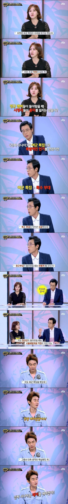
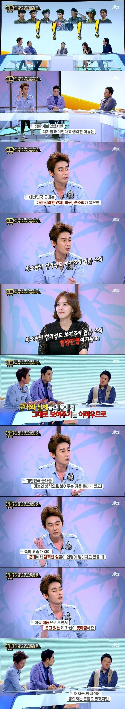

구라치지마~!
난 구라를 못쳐 구라치면 패륜아!
김구라를 치면 패륜되는건 동현이 뿐이잖음
MC그리도 패륜이래!
난 절떄 구라치지 않아 난 구라치면 패륜아 워~
구라가 그리 가르치드나
대단하다.
어깨 어지간히 좁으신가보네
난 오히려 반대임 오히려 저런 이미지 관리 할거라도있어야지 뭐일이라도 터지면 신경쓰지
이미지같은거 신경 안쓰고 응 좆까 병신들 해버리면 진짜 답없음
계속 노출시키고 이미지 관리라도 하게끔 신경쓰게끔 해야함
대중의 관심이 멀어지면 지들 맘대로 하니깐
나는 군대를 때리는건 아니라고 봄.
결국 장성급은 정치인과 연결 되는데 군인들이 뭘 마음대로 하것냐 정치인들이 다 그렇게 만드는거지.
동의안함. 멀쩡한 인간도 군대에서 하는 방식을 흡수해서 개판이 나아지질 않는다고 봄. 소위 말하는 군대식 해결법이 장성들이랑 정치인이 시켜서 했나?
허지웅하면
대충 사고 이후 필력이 좋아졌다…
템플릿밖에 안떠오름
그마저도 요근래는 다시 맛탱이간거같던데
회복이 되면서 다시 돌아가는중
나도 이거만생각남 ㅋㅋㅋ
요즘은 뭐하는지 몰루
아니면 군대관련 뉴스나 이슈만 다루는 유튜브나 플랫폼 신설해서 사소한거라도 다 모니터링되는 사이트를 만들든지 그래서 어느 부대에서 뭐했다 무슨 일있었다는 소식 익명으로 올라오면 조지는식
진짜사나이는 아니지만 i can do 같은 븅신구호가 외부에 알려져서 사라진거 생각하면 폐쇄성 짙은 조직이 얼마나 븅신같은지 보여주기 딱 좋은 사례라고 봄 ㅋㅋ
우리부대 충성 사랑합니다 이거였는데 진짜 ㅋㅋㅋ 23사단
신병에 나오는 그 구호 ㅋㅋㅋㅋ
놀랍게도 감동실화임 10년도 군번이었음
난 이기자 사랑합니다 였는데 ㅋㅋ
다들 비슷한거 하나씩은 있네 ㅋㅋㅋ
Yes i can ~
ㅇㄱㄸ
죽으면 옳그떠 풀리나 ? 아니었던 거 같음
방송으로 훈련이 더 의미가 있어졌는지는 모르겠는데
복지에는 확실히 영향 줬고 특히 밥 관련해서는
저런 예능 때문에 개선하려고 노력하는 게 보일 정도긴 해서 좋은 영향이 더 컸다고 봄
허지웅씨의 진심이 '이런 얘기를 하는 내가 카메라에 멋지고 생각 깊어 보이겠지.' 처럼 보이면 내가 커뮤를 너무 많이 한 걸까?
응 니 심산이 꼬이기 시작하는거야
난 네가 부정적인 감정에 물들지 않았으면 좋겠어.
진짜 저 최소한의 합리성도 보이지 않는 조직이란 저 말이 너무 찰떡이긴 함
병/간부/장교 는 물론이고
아들을 보낸 부모님부터 전국남녀노소
다좋아햇던거같은데
지금은 흥미가떨어졌긴함
이건 허지웅 말이 맞긴함
스피커가 비호감이라 여론이 뒤집힌거같은데 한창 방영할땐 개드립에서도 프로그램 재미랑 별개로 비판목소리는 반론 없이 계속 있었음
ㅇㅇ나도 군대 저 특유의 좆같음을 유쾌한 척 푸는 스탠스가 너무 쓰레기같음
재미도 없이 불쾌하기만한 꼰대 부장의 농담을 듣는 느낌
저때도 개드립이 있었어??? 생각보다 오래됐네??
내 가입일이 14년도인데 그때가 한창 방영하던 때일거임
말은 맞는말임
군대라는게 폭력을 가르치는 비교육 집단이라는 특수성이 있으니 합리성을 잃을 개연성이 크긴하지...
해외에서 보면 비극도 이런 비극이 없는데 우리는 희극이라고 낄낄댔음ㅋㅋ 강제로 끌려가놓고 여군특집 이딴거 좋다고 보는 애들 이해 안가김 함
그래. 사람이 어떻게 항상 ㅈ같은 말만 하겠어
틀린 말은 아니지
군대는 예능감으로 소비시키면 안돼
허지웅 씨 지적에 동의하는 분들도 있겠지만 나만 아니면 돼